Clean Your Phone Speaker with Sound
Free speaker cleaner tools that use low-frequency tones, sweeps and noise bursts to help shake dust and water out of your phone speaker. No app download needed — it works right in your browser.
Start Speaker CleaningFree Speaker Tools
Speaker Cleaner
Play low-frequency vibration tones, a full frequency sweep and noise bursts to help push dust and water out of your speaker.
Volume Test
Play test tones at different volume levels and check whether your speaker is quiet, muffled or back to normal.
Frequency Generator
Generate a real sine tone at any frequency from 20 Hz to 20,000 Hz and find where your speaker sounds weak or distorted.
Sound Test
Check left and right channels, stereo balance, bass and treble with dedicated test tones for each.
How Sound Cleaning Works
A phone speaker is a tiny diaphragm that moves air to make sound. When dust, lint or water sits on that diaphragm, it cannot move freely, so your phone sounds quiet or muffled. Playing a low-frequency tone makes the diaphragm vibrate strongly. Those vibrations can shake loose dust and push small water droplets out through the speaker grille.
Our Speaker Cleaner plays tones around 100–200 Hz, a sweep from 100 Hz up to 20 kHz, and short noise bursts. For best results, turn your volume up, hold the phone with the speaker facing down, and run the cleaner for 30–60 seconds. You can read the full explanation in our guide How Speaker Cleaner Apps Work.
Speaker Cleaning & Testing Guides

How Speaker Cleaner Apps Work
What cleaning tones actually do inside your phone, and why vibration can move dust and water.

How to Remove Dust from Your Phone Speaker
Safe step-by-step methods to get lint and dust out of the speaker grille without damage.
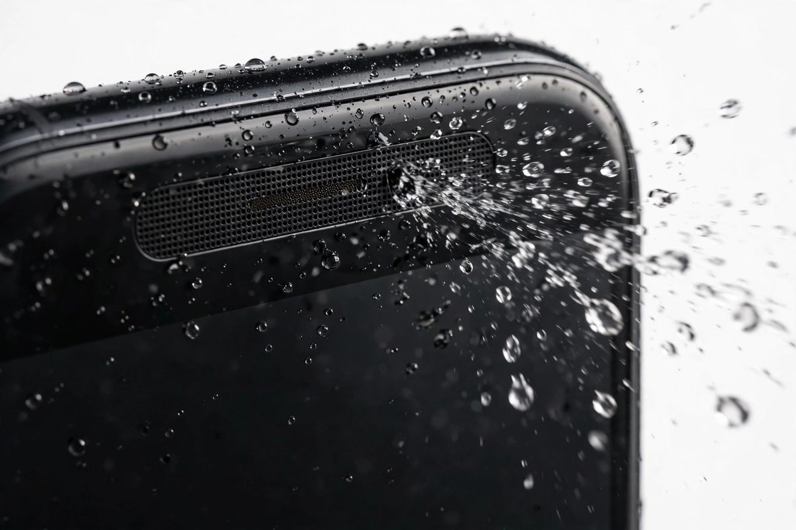
Water Eject Sound: How It Removes Water from Speakers
How water-eject tones push droplets out of the speaker, and what to do right after your phone gets wet.

How to Fix Low or Muffled Speaker Volume
From blocked grilles to wrong settings, the most common causes of quiet speakers and how to fix them.
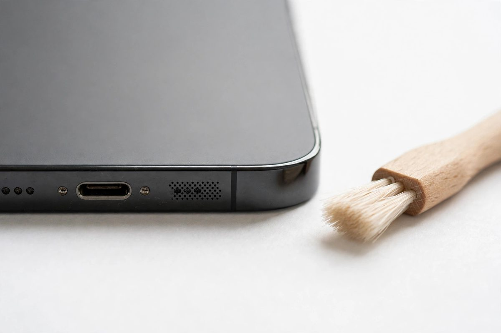
How to Clean an iPhone Speaker Safely
iPhone-specific cleaning steps, what Apple recommends, and what you should never do to an iPhone speaker.

How to Clean a Samsung or Android Phone Speaker
Cleaning steps for Samsung and other Android phones, including built-in cleaning options.
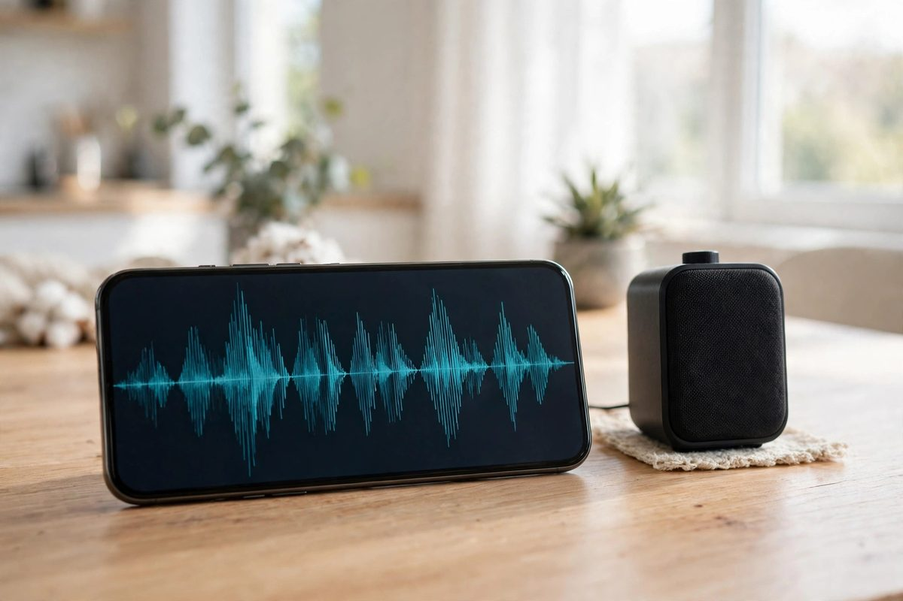
Speaker Test Sounds: How to Check Your Phone Speaker
Use test tones to find out whether your speaker is healthy, weak, distorted or blocked.
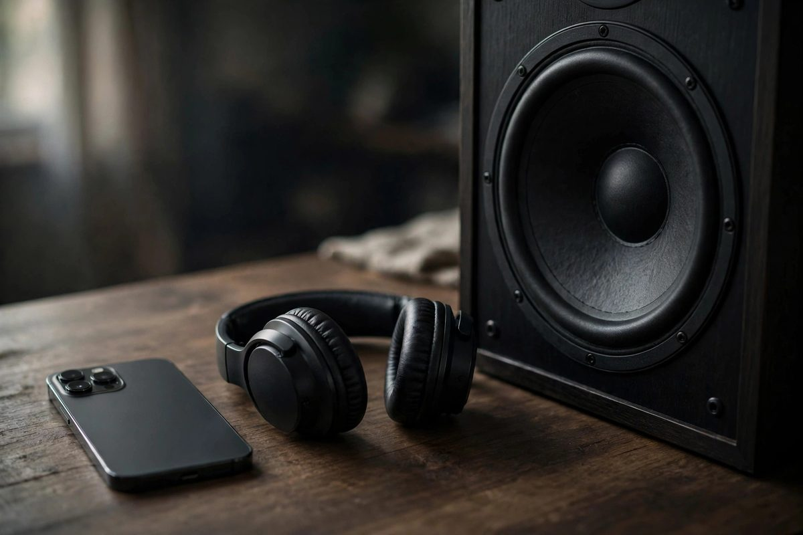
Bass and Treble Test: Check Your Speaker's Sound Range
Test the low and high ends of your speaker's range and learn what the results mean.

Left and Right Channel Test for Phone Speakers
Check stereo balance and find out whether one channel is quieter than the other.
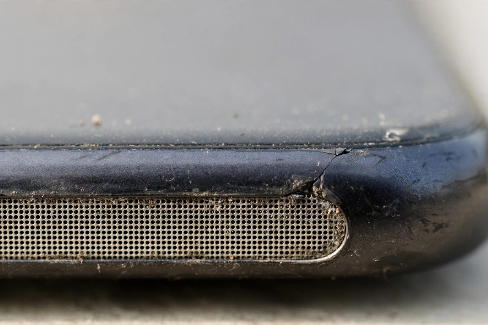
What Causes Speaker Distortion on a Phone
Blown speakers, loose parts, dust, water and software — the real causes of distorted sound.
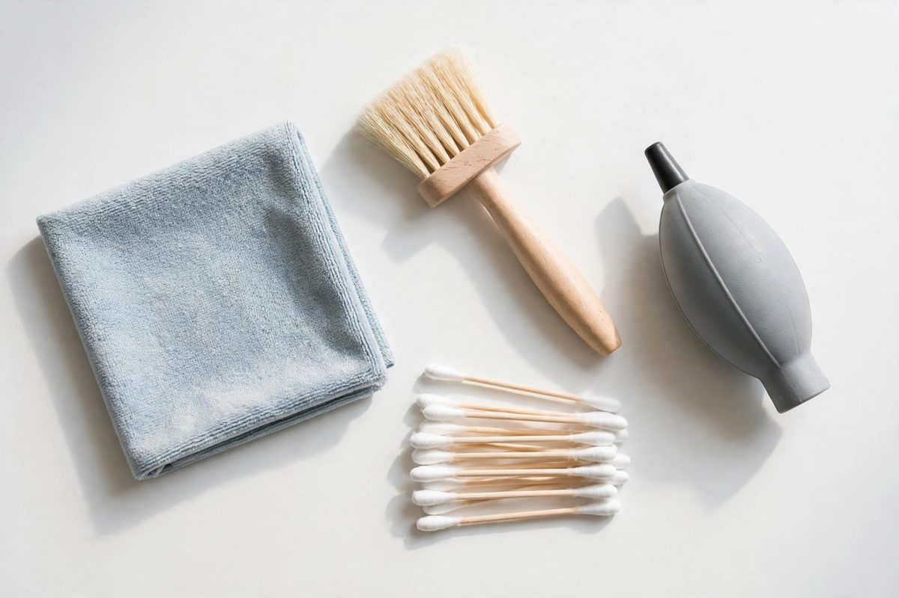
Safe Ways to Clean a Phone Speaker
Soft brushes, air blowers and sound cleaning — the safe methods, and the risky ones to avoid.

Frequency Sweep Explained: What It Does to Your Speaker
What a sweep from low to high frequencies does, and why it helps cleaning and testing.

When to Visit a Repair Shop for Speaker Problems
Signs that cleaning will not help and a technician needs to look at your phone.
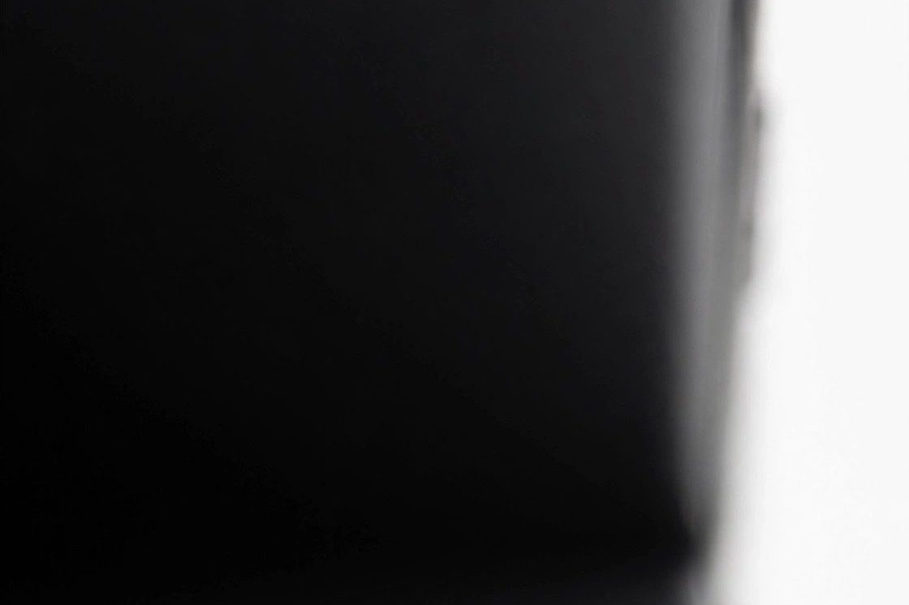
Earpiece vs Loudspeaker Cleaning: What's Different
The earpiece and the loudspeaker are different parts. Learn how to clean each one safely.

Cleaning Your Phone Speaker After Rain or the Beach
Rain and sand need different care. Steps to take right away to protect your speaker.
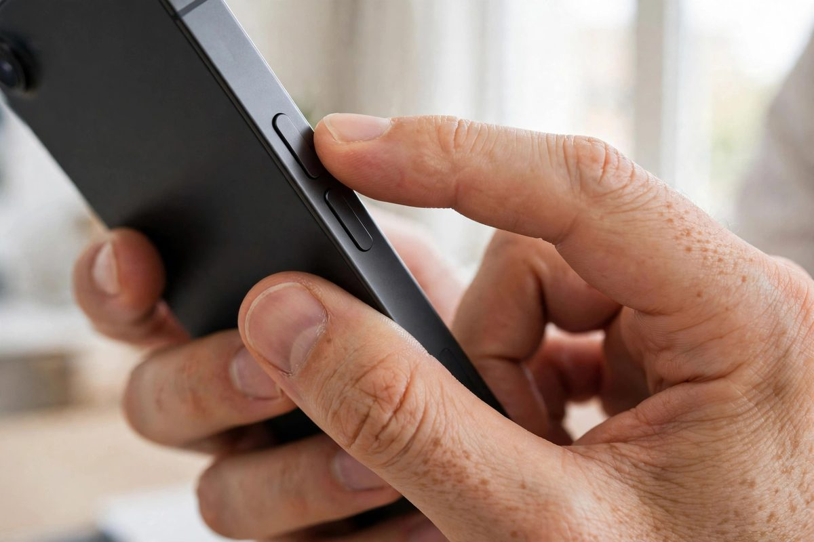
Phone Volume Suddenly Low? Fixes That Work
Quick checks and fixes when your phone suddenly goes quiet, before you assume it is broken.

How to Fix a Crackling Phone Speaker
What crackling means, the safe fixes to try, and when crackling points to hardware damage.
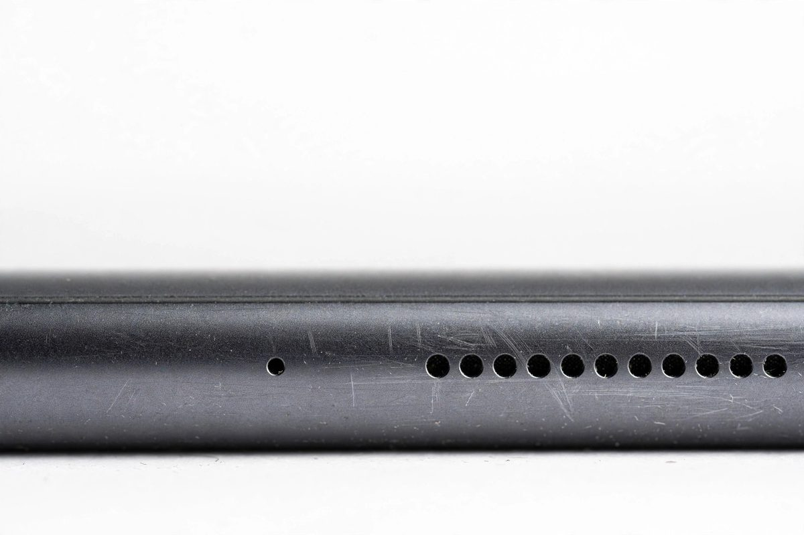
Microphone vs Speaker Cleaning: Know the Difference
The mic hole and the speaker grille look similar but need different care. Do not mix them up.
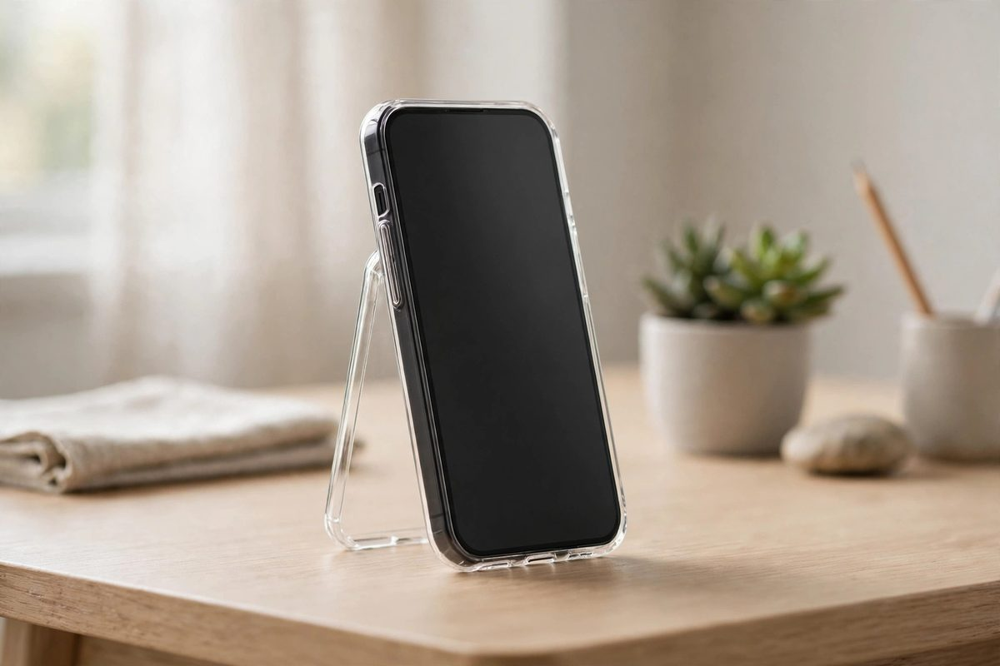
Best Practices to Keep Your Phone Speakers Clean
Simple daily habits that keep dust and lint out of your speakers in the first place.
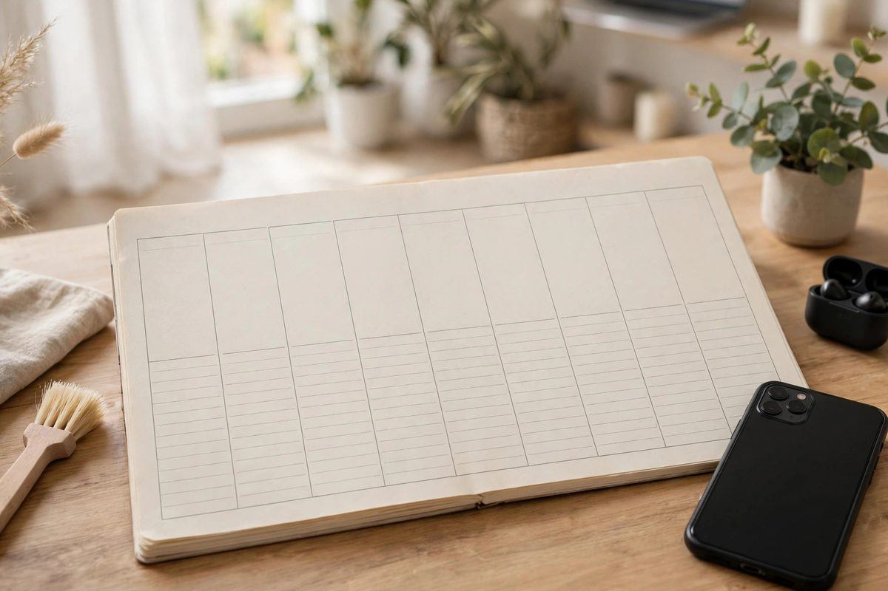
How Often Should You Clean Your Phone Speaker
A practical cleaning schedule for normal use, dusty places, and after water exposure.
Before You Start Cleaning
Turn your volume up, remove your phone case, and hold the phone with the speaker facing down so gravity helps dust and water fall out. Never poke the speaker grille with pins, needles or SIM ejector tools — they can tear the speaker mesh or puncture the diaphragm. If you are unsure whether your problem is dirt or damage, start with the Sound Test and read What Causes Speaker Distortion on a Phone first.
Want to know more about this site? Read About Speaker Cleaner Hub, or contact us with questions or feedback.